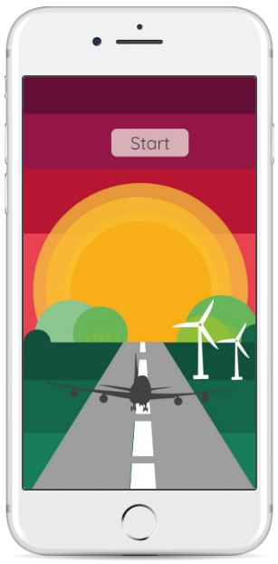
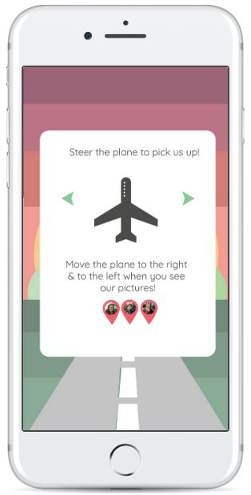
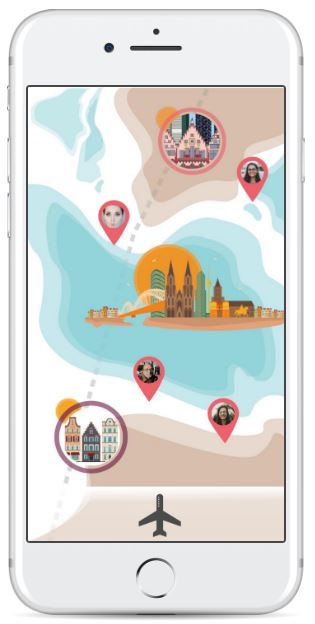
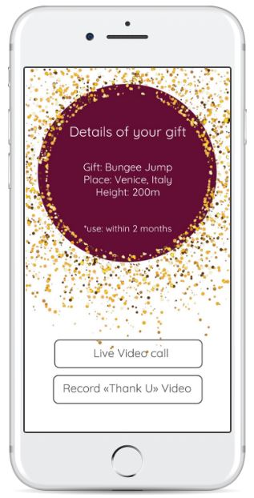

Work Experience
Real-time Data Analyst
ACN Europe (Breslau, Poland)
April 2017 - September 2018
Worked closely with management and other site personnel to achieve high level goals and promote a focused, goal-driven environment
Key responsibilities:
- Assist Work Force Manager with call flow analysis and suggestions
- Lead, plan, organize and control workflow as it relates to accepting and processing inbound call volume, manage service levels to the one-half hour intervals
- Observe and monitor inbound and outbound call volume and create a strategic plan to improve and maintain key performance indicators attainment
- Serve as a focal point for system issues, including opening IT tickets, notifying call center management of current status
- Track, audit, and report statistical data relating to Call Center service levels (i.e daily, weekly, monthly, and executive) etc
- Identify and analyze data trends as they develop and communicate recommendations effectively to management in order to maintain key performance indicators
Graphic Designer
Y.Vision (Kiev, Ukraine)
October 2015 - March 2016
Created visual design for creative project within cooperation with ProO company for Ukrainion fashion week backstage.
Key contributions:
- Creating posters , ads and booklets for the program, seminars and tutorials. Designing event posters for Beauty-workshops.
- Preparation of experimental graphic design presentations in beauty idustry.
See more works from this project and other graphic design projects at behance.net
See my complete work history on LinkedIn.
Education
The Hague University of Applied Scienses
2018 - 2020
BA User Experience Design
User Experience Designing is the process of creating products that provide meaningful and relevant experiences to users. This involves the design of the entire process of acquiring and integrating the product, including aspects of branding, design, usability, and function.
College of Kiev National University of Technology and Design
2012-2016
Junior specialist in Graphic Design
Graphic design is the process of visual communication and problem-solving through the use of typography, photography and illustration.
Finest Project
Below there are a few examples of the visuals for the game that was made for Bespoke Design project. Main topic was "Gift giving experience" and goal of this project was creating a tailored experience for one user who would be receiving an intangible gift.
Client for this project is Hallmark, who is currently looking for inspiration and new ideas around designing experience for receiving intagible gifts Three objectives of the project were: crowdfunding app, physical card and digital unwrapping. Below example is a part of digital unwrapping.
   